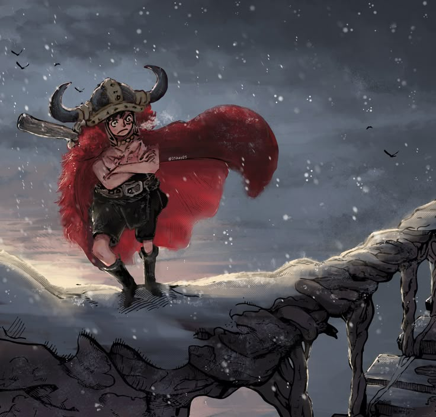

Como todo buen estudiante de ingenieria en software soy un fockin friki que pasa la mayor parte de su dia en la computadora ya no tanto jugando pues he desarrollado más gustos aparte de solo jugar videojuegos; aparte de tener una pasion por el software la verdad es que mi pasion por la tecnologia tambien se desarrollo por mi amor al hardware pues aproximadamente en mi segundo año de secundaria me comenzo a llamar la atencion ensamblar computadoras y ensamble mi propia computadora gamer y de ahi en adelante mi pasion por la tecnologia